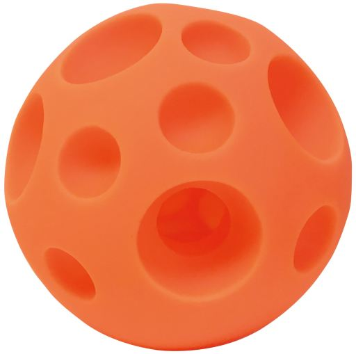
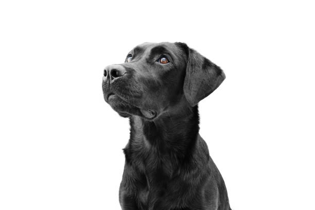
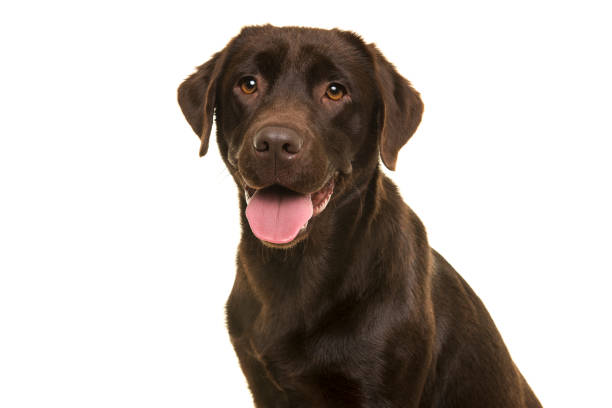
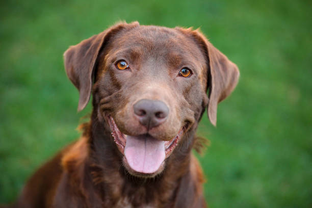
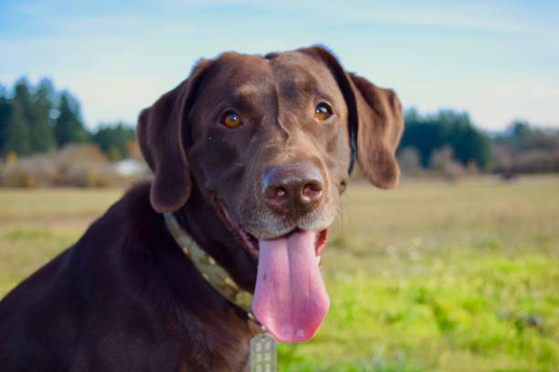
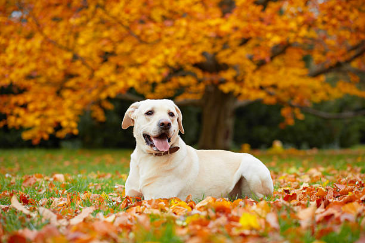
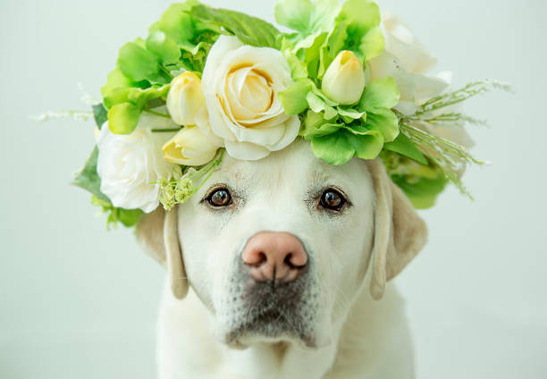
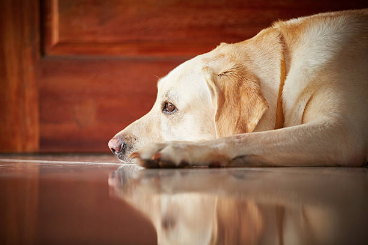
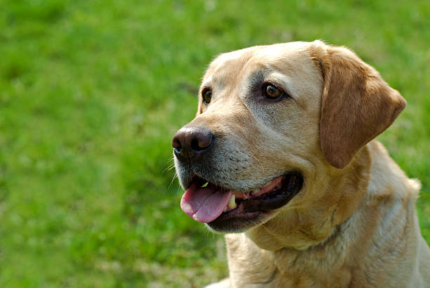

“Dogs are not our whole life, but they make our lives whole. ”
About the Breed 
The sweet-faced, lovable Labrador Retriever is America's most popular dog breed. Labs are friendly, outgoing, and
high-spirited companions who have more than enough affection to go around for a family looking for a medium-to-large
dog. The sturdy, well-balanced Labrador Retriever can, depending on the sex, stand from 21.5 to 24.5 inches at the
shoulder and weigh between 55 to 80 pounds. The dense, hard coat comes in yellow, black, and a luscious chocolate. The
head is wide, the eyes glimmer with kindliness, and the thick, tapering 'otter tail' seems to be forever signaling the
breed's innate eagerness. Labs are famously friendly. They are companionable housemates who bond with the whole family,
and they socialize well with neighbor dogs and humans alike. But don't mistake his easygoing personality for low energy:
The Lab is an enthusiastic athlete that requires lots of exercise, like swimming and marathon games of fetch, to keep
physically and mentally fit.
“A dog is the only thing on earth that loves you more than he loves himself. ”
BLACK

Black Labs have a dark, pure black coat that is sleek and shiny. They’re chosen most often for hunting, but they also
make wonderful non-working pets.
YELLOW
Yellow Labs can have a pretty wide range of coloration, and two other Lab colors we’ll discuss later are really just
extremes of the Yellow Lab color spectrum. Yellow Labs often have a very light brown or tan colored coat that can appear
yellowish.
CHOCOLATE

Chocolate Labs are regarded as the most energetic and hardest to train, and while there is no research-based evidence to
support this, Chocolate Labs are the only Labs not used as service dogs by the leading dog training organizations.
Average sizes and life expectancy of the breed.
HEIGHT
22.5-24.5 inches (male)
21.5-23.5 inches (female)
WEIGHT
65-80 pounds (male)
55-70 pounds (female)
LIFE expectancy
11-13 years
GALLERY





